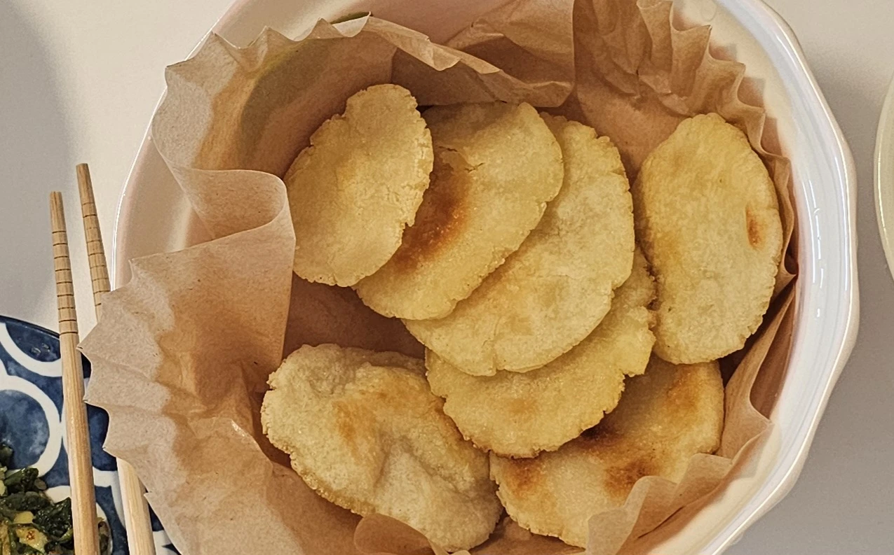

// Recipe · Side dish · 찹쌀전
Chapssal-jeon

Small, chewy glutinous rice pancakes, pan-fried until golden and served with a sweet syrup-and-sugar sauce.
Ingredients
- Glutinous (sweet) rice flour
- Water
- Cooking oil
Sauce
- Oligosaccharide syrup*
- Sugar
Steps
- Take out a generous amount of glutinous rice flour.
- Add water bit by bit — stop while the dough still feels slightly dry.
- Mix with a spoon; once it mostly comes together, switch to your hands.
- Roll the dough into a long log, pinch off small pieces, roll each into a ball, then press it flat with your hand.
- Pour plenty of oil into a frying pan (a little less than you would for deep-frying) and drop in the pancakes.
- When they start to puff up, flip them. Once golden, take them out and blot the oil with a paper towel.
Sauce: oligosaccharide syrup with sugar.
*Substitutions
- No oligosaccharide syrup? Use sugar or another syrup. Oligo syrup is milder, so start with less and adjust.